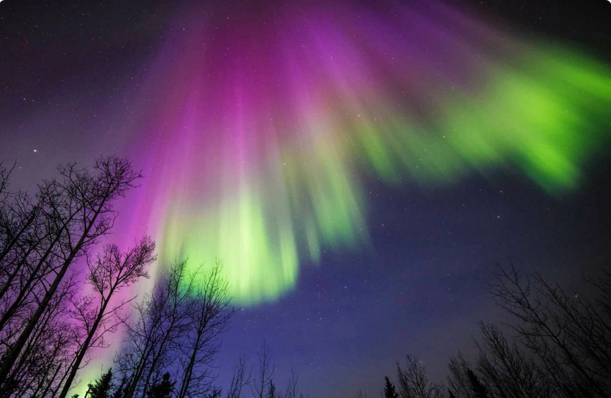
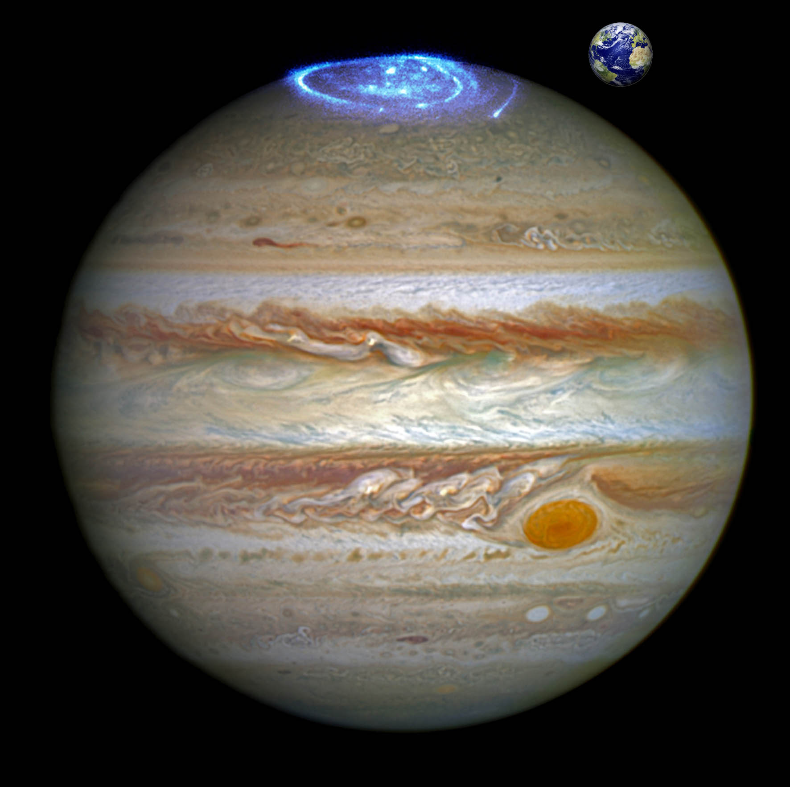

Полярне сяйво (лат. Aurora borealis) - оптичне явище у верхніх шарах атмосфери, світіння окремих ділянок нічного неба, що швидко змінюється. На Землі такі сяйва спостерігаються на відстані 20—35° від магнітних полюсів Землі одночасно на всіх довготах, але з різною інтенсивністю. За формами полярне сяйво розрізняють: дифузне сяйво з дугами від однієї точки горизонту до іншої, а також промені, стрічки, корони, плями. Тривалість полярного сяйва — від декількох хвилин до декількох діб.Частота його появи корелює з 11-річним циклом сонячної активності, порою року, 27-денним періодом та магнітною активністю.
У полярних регіонах надзвичайно красиве світіння повітря у вигляді яскравого проміння, смуг, дуг, занавісок, спалахів - полярні сяйва. Причиною їх появи є постійний потік заряджених частинок (протонів і електронів) ід Сонця, так званий сонячний вітер, коли він проходить через магнітне поле Землі у верхній частині атмосфери. Входячи в атмосферу, частинки посилюють іонізацію газів настільки, що починається їх світіння. Найчастіше сяйва з'являються на висоті близько 100 км. Найменша висота їх появи - 60 км, найбільша - 1000 км. Точно встановлено, що виникнення полярних сяйв пов'язане з явищами на Сонці. За день чи більше до появи потужних полярних сяйв незмінно спостерігається підвищена сонячна активність. Слабкі полярні сяйва відбуваються неперервно, тобто постійно існує збуджувальна причина, дія якої посилюється зі зростанням сонячної активності.

Цілий ряд непізнаних залежностей краси північного сяйва від деяких факторів відкрили спостерігачі і підтвердили вчені:
| Форми | Стрічкоподібна | Дифузна | Лучева |
|---|---|---|---|
| Структури | Однорідна | Лучева | Волокниста |
| Степені | Спокійна | Активна | - |

Хоча Венера і не має достатньо сильного магнітного поля, вони з'являються у вигляді світлих і дифузних плям різної форми і інтенсивності, іноді зачіпають весь планетарний диск. Сяйва на Венері утворюються шляхом зіткнень електронів сонячного вітру і атмосфери планети і особливо добре видно на нічному боці атмосфери.
Полярні сяйва також були виявлені і на Марсі, 14 серпня 2004 року, інструментом SPICAM на борту Mars Express. Воно знаходилося в районі Кіммерію Рос. (52 ° ю. Ш. 177 ° сх. Д.). Загальний розмір випромінюючої області становив близько 30 км в діаметрі, і приблизно 8 км у висоту. Аналізуючи карту розломів кори, скомпільовану з даних космічного апарату Mars Global Surveyor, вчені помітили, що області викидів відповідають району, де локалізовано магнітне поле. Це вказує на те, що виявлене світлове випромінювання було потоком електронів, що рухаються уздовж силових ліній магнітного поля в верхні шари атмосфери Марса.
Особливістю Юпітера є вплив його супутників на полярні сяйва: в областях «проекцій» пучків силових ліній магнітного поля на авроральной овал Юпітера спостерігаються яскраві області полярного сяйва, збуджені струмами, викликаними рухом супутників в його магнітосфері і викидом іонізованого матеріалу супутниками - останнє особливо позначається в разі Іо з її вулканізмом.
Магнітні поля планет-гігантів Сонячної системи значно сильніше магнітного поля Землі, що зумовлює більший масштаб полярних сяйв цих планет в порівнянні з полярними сяйвами Землі
Мандрівники іноді засмучуються, якщо їм не вдається застати кольорове світлове шоу під час свого перебування на півночі чи півдні. Люди часто можуть спостерігати лише світіння, яке не має кольору. Це відбувається не через особливості природного явища. Справа в тому, що людське око не здатне вловлювати кольору при слабкому освітленні. У напівтемній кімнаті ми бачимо всі предмети чорно-білими. Те ж саме відбувається і при спостереженні за природним явищем на небі: якщо воно недостатньо яскраве, то наші очі не будуть вловлювати кольору. Фахівці вимірюють яскравість світіння в балах від одного до чотирьох. Кольоровими здаються лише трьох- і чотирибальною полярні сяйва. Четверта ступінь близька по яскравості до місячному світлу в нічному небі.
У багатьох північних народів поява на небі різнокольорових мерехтливих вогнів не викликає почуття захоплення, для них це - поганий знак. Відомо, що це явище прямо пов'язане з магнітними полюсами Землі і особливо часто виникає під час так званих «магнітних бур», які, в свою чергу, несприятливо впливають на людський організм. За багатовікову історію свого існування ці північні народи вловили деяку закономірність між виникненням полярного сяйва і погіршенням самопочуття.